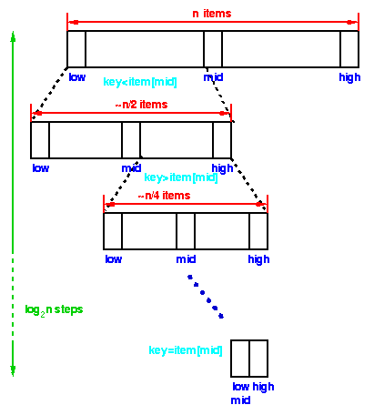

Thus at large n, log n is much smaller than n, consequently an O(log n) algorithm is much faster than an O(n) one.

| Data Structures and Algorithms |
| 4 Searching |
Computer systems are often used to store large amounts of data from which
individual records must be retrieved according to some search criterion. Thus
the efficient storage of data to facilitate fast searching is an important
issue. In this section, we shall investigate the performance of some searching
algorithms and the data structures which they use.
If there are n items in our collection - whether it is stored as an array or as
a linked list - then it is obvious that in the worst case, when there is no
item in the collection with the desired key, then n comparisons of the key with
keys of the items in the collection will have to be made.
To simplify analysis and comparison of algorithms, we look for a dominant
operation and count the number of times that dominant operation has to be
performed. In the case of searching, the dominant operation is the comparison,
since the search requires n comparisons in the worst case, we say this is a
O(n)
In binary search, we first compare the key with the item in the middle position
of the array. If there's a match, we can return immediately. If the key is less
than the middle key, then the item sought must lie in the lower half of the
array; if it's greater then the item sought must lie in the upper half of the
array. So we repeat the procedure on the lower (or upper) half of the array.
Our FindInCollection
function can now be implemented:
4.1 Sequential Searches
Let's examine how long it will take to find an item matching a key in the
collections we have discussed so far. We're interested in:
However, we will generally be most concerned with the worst-case time as
calculations based on worst-case times can lead to guaranteed performance
predictions.
Conveniently, the worst-case times are generally easier to calculate
than average times.
4.2 Binary Search
However, if we place our items in an array and sort them in either ascending or
descending order on the key first, then we can obtain much better performance
with an algorithm called binary search.
static void *bin_search( collection c, int low, int high, void *key ) {
int mid;
/* Termination check */
if (low > high) return NULL;
mid = (high+low)/2;
switch (memcmp(ItemKey(c->items[mid]),key,c->size)) {
/* Match, return item found */
case 0: return c->items[mid];
/* key is less than mid, search lower half */
case -1: return bin_search( c, low, mid-1, key);
/* key is greater than mid, search upper half */
case 1: return bin_search( c, mid+1, high, key );
default : return NULL;
}
}
void *FindInCollection( collection c, void *key ) {
/* Find an item in a collection
Pre-condition:
c is a collection created by ConsCollection
c is sorted in ascending order of the key
key != NULL
Post-condition: returns an item identified by key if
one exists, otherwise returns NULL
*/
int low, high;
low = 0; high = c->item_cnt-1;
return bin_search( c, low, high, key );
}
Points to note:
static reduces the visibility of a function an
should be used wherever possible to control access
to functions!
Analysis
|  |
Each step of the algorithm divides the block of items
being searched in half.
We can divide a set of n items in half
at most log2 n times.
Thus the running time of a binary search is proportional to log n and we say this is a O(log n) algorithm. |
|
Binary search requires a more complex program
than our original search and thus for small n
it may run slower than the simple linear search.
However, for large n, Thus at large n, log n is much smaller than n, consequently an O(log n) algorithm is much faster than an O(n) one. |
|
We will examine this behaviour more formally in a later section. First, let's see what we can do about the insertion (AddToCollection) operation.
In the worst case, insertion may require n operations to insert into a sorted list.
A similar analysis will show that deletion is also an O(n) operation.
If our collection is static, ie it doesn't change very often - if at all - then we may not be concerned with the time required to change its contents: we may be prepared for the initial build of the collection and the occasional insertion and deletion to take some time. In return, we will be able to use a simple data structure (an array) which has little memory overhead.
However, if our collection is large and dynamic, ie items are being added and deleted continually, then we can obtain considerably better performance using a data structure called a tree.
Key terms |
| Continue on to Trees | Back to the Table of Contents |